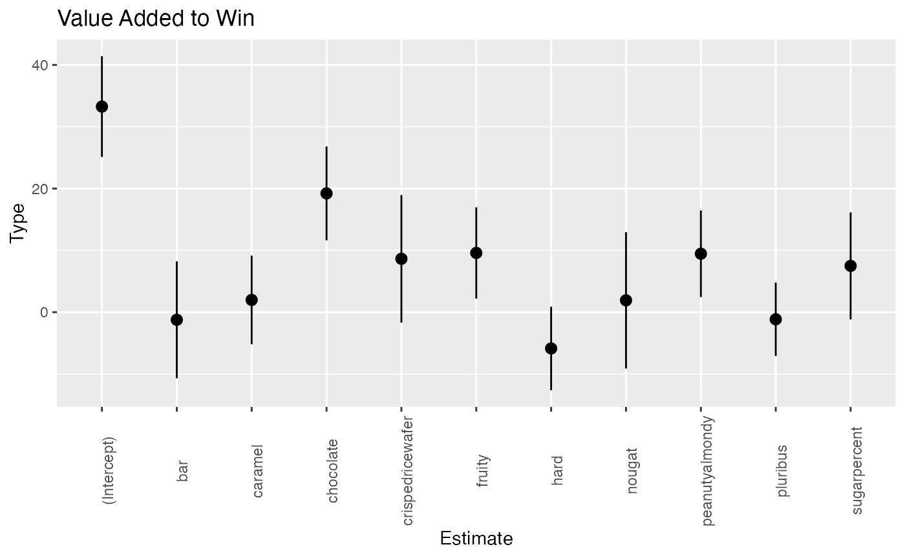

Candy Vignette
Trevor VanVeldhuisen
Candy_Vignette.Rmd
library(fuzzybunnies)
library(tidyverse)
#> ── Attaching packages ─────────────────────────────────────── tidyverse 1.3.2 ──
#> ✔ ggplot2 3.4.0 ✔ purrr 1.0.0
#> ✔ tibble 3.1.8 ✔ dplyr 1.0.10
#> ✔ tidyr 1.2.1 ✔ stringr 1.5.0
#> ✔ readr 2.1.3 ✔ forcats 0.5.2
#> ── Conflicts ────────────────────────────────────────── tidyverse_conflicts() ──
#> ✖ dplyr::filter() masks stats::filter()
#> ✖ dplyr::lag() masks stats::lag()
library(dplyr)
library(broom)Vignette using the dataframe candydata
candydata <- read_csv('https://raw.githubusercontent.com/fivethirtyeight/data/master/candy-power-ranking/candy-data.csv')
#> Rows: 85 Columns: 13
#> ── Column specification ────────────────────────────────────────────────────────
#> Delimiter: ","
#> chr (1): competitorname
#> dbl (12): chocolate, fruity, caramel, peanutyalmondy, nougat, crispedricewaf...
#>
#> ℹ Use `spec()` to retrieve the full column specification for this data.
#> ℹ Specify the column types or set `show_col_types = FALSE` to quiet this message.
head(candydata)
#> # A tibble: 6 × 13
#> competitor…¹ choco…² fruity caramel peanu…³ nougat crisp…⁴ hard bar pluri…⁵
#> <chr> <dbl> <dbl> <dbl> <dbl> <dbl> <dbl> <dbl> <dbl> <dbl>
#> 1 100 Grand 1 0 1 0 0 1 0 1 0
#> 2 3 Musketeers 1 0 0 0 1 0 0 1 0
#> 3 One dime 0 0 0 0 0 0 0 0 0
#> 4 One quarter 0 0 0 0 0 0 0 0 0
#> 5 Air Heads 0 1 0 0 0 0 0 0 0
#> 6 Almond Joy 1 0 0 1 0 0 0 1 0
#> # … with 3 more variables: sugarpercent <dbl>, pricepercent <dbl>,
#> # winpercent <dbl>, and abbreviated variable names ¹competitorname,
#> # ²chocolate, ³peanutyalmondy, ⁴crispedricewafer, ⁵pluribusThe dataframe shows all of the most preferred Halloween candy. The data comes from a survey that reached 8,371 people and pitted up different candies against each other in about 269,000 rounds. That is where the win percent column comes from, while the other data is based off of the characteristics, price, and amount of sugar.
This was found on the website https://fivethirtyeight.com/videos/the-ultimate-halloween-candy-power-ranking/
#Introducing ggplot2
ggplot2 is a package based on “The Grammar of Graphics.” It provides an easy way to present data based on the variables and aesthetics you tell ggplot2 to use. To use ggplot, you start with ggplot(), add a data set to it, and then begin to add layers to the code by telling it what kind of aesthetic you are looking for.
#Creating a bar plot
#organize data
acsendwin <- candydata %>%
arrange(desc(winpercent)) %>%
slice(1:10)
#Create Top 10 Candies Bar Chart
ggplot(data=acsendwin, aes(x=competitorname, y=winpercent)) +
geom_bar(stat = "Identity", fill = "Blue")+ theme_minimal() +
theme(axis.text.x = element_text(angle = 90)) +
xlab("Candy Type") + ylab("Win Percent") +
ggtitle("Top 10 Candies")
From this bar chart, we can tell that Reese’s Peanut Butter Cup is the most favorite Halloween Candy according to this study.
#Basic Regression Analysis
Does the sugar content in the candy have any relation with the win percent? Here we can do linear regression to tell us if there is a relationship between the two.
#Create the Model
sugartest <- lm(winpercent ~ sugarpercent, data = candydata)
print(summary(sugartest))
#>
#> Call:
#> lm(formula = winpercent ~ sugarpercent, data = candydata)
#>
#> Residuals:
#> Min 1Q Median 3Q Max
#> -24.924 -11.066 -1.168 9.252 36.851
#>
#> Coefficients:
#> Estimate Std. Error t value Pr(>|t|)
#> (Intercept) 44.609 3.086 14.455 <2e-16 ***
#> sugarpercent 11.924 5.560 2.145 0.0349 *
#> ---
#> Signif. codes: 0 '***' 0.001 '**' 0.01 '*' 0.05 '.' 0.1 ' ' 1
#>
#> Residual standard error: 14.41 on 83 degrees of freedom
#> Multiple R-squared: 0.05251, Adjusted R-squared: 0.04109
#> F-statistic: 4.6 on 1 and 83 DF, p-value: 0.0349
#Plot the Model
ggplot(candydata,aes(sugarpercent, winpercent)) +
geom_point() +
geom_smooth(method='lm') +
xlab("Sugar Percent") + ylab("Win Percent") +
ggtitle("Regression")
#> `geom_smooth()` using formula = 'y ~ x'For this model we will use a significance value of p = 0.05 and a null hypothesis that there is no relationship between sugar content and win percent. Looking at the results of this model and a p-value of 0.0349, we can reject the null hypothesis and claim these two variables do have a relationship. However, looking at the multiple R-squared and the corresponding graph, we can see that this model has a lot of variability around the regression line and sugar content is not explaining the variance in the dependent variable. With this, we can add more variables to the model to see which ones contribute the most to having the highest win percentage.
#Seeing Which Characteristic Have the most Effect
#Create the New Model with Extra Variables
sigtest <- glm(winpercent ~ sugarpercent + chocolate + fruity + caramel + peanutyalmondy + nougat + crispedricewafer + hard + bar + pluribus, data = candydata)
coef <- tidy(sigtest, conf.int = TRUE)
coef
#> # A tibble: 11 × 7
#> term estimate std.error statistic p.value conf.low conf.high
#> <chr> <dbl> <dbl> <dbl> <dbl> <dbl> <dbl>
#> 1 (Intercept) 33.3 4.16 8.00 1.31e-11 25.1 41.4
#> 2 sugarpercent 7.49 4.42 1.69 9.44e- 2 -1.18 16.2
#> 3 chocolate 19.2 3.87 4.96 4.30e- 6 11.6 26.8
#> 4 fruity 9.59 3.76 2.55 1.29e- 2 2.21 17.0
#> 5 caramel 1.98 3.65 0.542 5.89e- 1 -5.18 9.14
#> 6 peanutyalmondy 9.45 3.57 2.65 9.96e- 3 2.45 16.5
#> 7 nougat 1.92 5.63 0.341 7.34e- 1 -9.11 12.9
#> 8 crispedricewafer 8.64 5.27 1.64 1.05e- 1 -1.69 19.0
#> 9 hard -5.87 3.45 -1.70 9.31e- 2 -12.6 0.891
#> 10 bar -1.23 4.82 -0.256 7.99e- 1 -10.7 8.21
#> 11 pluribus -1.15 3.03 -0.378 7.06e- 1 -7.09 4.79
#Plot the New Model
ggplot(coef, aes(term, estimate)) +
geom_point() +
geom_pointrange(aes(ymin = conf.low, ymax = conf.high)) +
theme(axis.text.x = element_text(angle = 90)) +
ggtitle("Value Added to Win") +
scale_fill_grey() +
xlab("Estimate") + ylab("Type")
Looking at this graph of the Estimates, we can see that chocolate has the highest contribution to a higher win percent by almost 20%. We can also see that the crispedricewafer, fruity, and peanutyalmondy also had a higher contribution than others. Candy that is hard is the least favorite characteristic. This data can be helpful for those wondering what kids would like on Halloween, or even for a business looking to enter into the candy industry.
#Conclusion
ggplot was simple to use and there was plenty of helpful information on the internet. I would recommend ggplot for those that are just starting to get familiar with R and statistical analysis. It is not overly complicated and can help create helpful, good looking graphs. It does not have many intuitive tools as compared to other graphics packages in R, however, makes up for this lack in its simplicity and its ability to be user friendly.